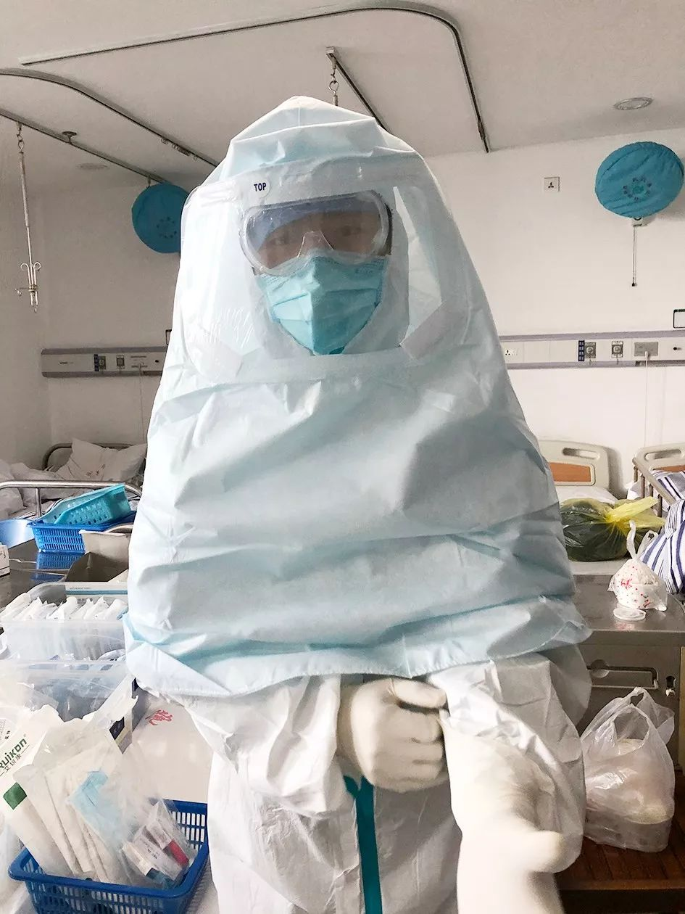
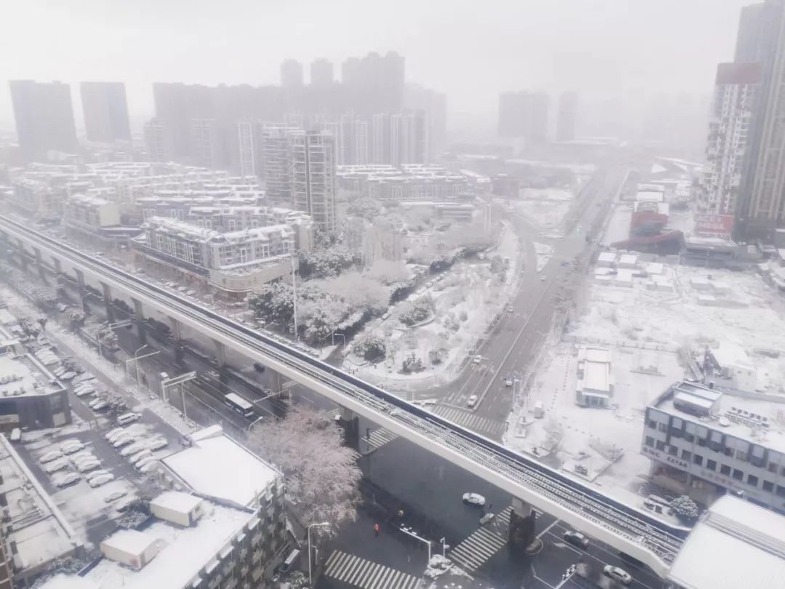
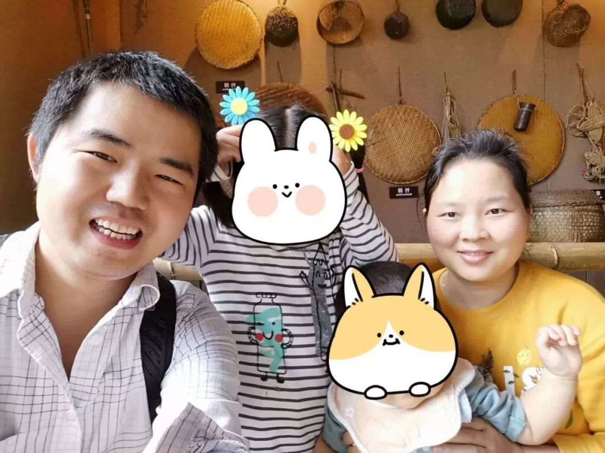

“直播”求医26天，“我删掉了写好的遗书”
原文链接 备份链接 澎湃新闻记者 赵思维 发自武汉 实习生 夏梦洁 从1月23日21时许发出第一条求助微博，25岁的新冠肺炎痊愈者武康发布了50余条微博，粉丝从1000涨至现在的179万粉丝。 这些微博记录了他从发病住不进院的无助、被病魔 …
后来我回想，也挺后怕的。我接诊阿姨的时候，给她查体，她对着我咳嗽过。
口述 | 宋亚锋
整理 | 黄 祺
“突然听到一个消息，心情很不好，内心很恐惧，虽然根本不认识，但感觉很难过，一路走好，希望你的家人能够渡过难关！”2月7号这天，武汉一位医生因为感染新冠病毒去世，我特别难过，我在朋友圈看到这段话。那是我在新冠肺炎隔离病房工作的第十五天。
我是个胃肠肛肠外科医生，我所在的武汉市第四医院（西区）是武汉市第一批被征用的新冠肺炎指定收治医院。从除夕那天上岗进入新冠肺炎隔离病房，第一轮上班到元宵节结束，现在我正在政府安排的宾馆隔离轮休。

宋亚锋在隔离病房
想想过去的这个月，我都经历了什么？只能说我很幸运，我在毫无防护之下接诊过新冠肺炎病人，居然没事。身边同行、同事倒下了，有同事还住在我的病房里，想到种种已经发生的现实，有一种深深的无力感。
我最近一直想理一理脑子，但是思绪太乱，理不清了。
后来确诊的病人，曾对着我咳嗽了
这是一场毫无准备的战争，开始的时间比新闻报道的要早一些。
去年12月上旬武汉卫健委通报首例不明原因肺炎病例，到12月下旬，我就已经听说一些医院设立呼吸传染病隔离区。武汉的医生圈子很小，绝大部分要么是武汉大学毕业的，要么是同济医学院毕业的。在这个圈子里，有医生通过微信群谈及不明肺炎的消息已经传开了。
到了12月31日，武汉卫健委通报出现27例“病毒性肺炎”。
我是胃肠肛肠外科医生，不大会接触到呼吸道疾病的患者，况且当时官方的说法是“这种传染病有限人传人”，所以尽管知道有传染病，但上班的时候还是没做什么刻意的防护，大家都没有做。
1月17日，我的一个老病人来看病。她是位60多岁的阿姨，几年前做了肠癌手术，手术后恢复良好，没做放化疗，一直在我这里定期复查。每次复查，都没有发现复发迹象，也没有其他基础疾病，整个人状态挺好的。
她来的时候症状是腹泻恶心，已经腹泻4天了，没有呼吸道症状，偶尔咳一下。她说4天前跟朋友吃了一顿饭，回家后开始腹泻。我给她做了腹部CT，肠道没什么大问题，没找到她腹泻的原因。
住进医院两天后，阿姨出现发烧、干咳、呼吸急促。我马上安排她去做胸部CT，片子拿来一看，我高度怀疑她得的是这个病。那时候大家就是这么称呼新冠肺炎的——“病毒肺”。
打电话再次向放射科确认。
阿姨意识清楚，非常信任我，我给她做了一些治疗，从鼻导管给氧，到储氧面罩给氧，病情仍在加重。
高度怀疑后，我给呼吸科打电话申请紧急会诊。呼吸科的医生来了，用了一些药物，但还是在恶化。当时要把病人转到呼吸科是不可能的，因为呼吸科病床早就住满了，连其他科内科也收治了一些肺炎病人。
到了21号，阿姨病情已经非常重了，我想办法把她转到了呼吸科，上了高流量氧疗，再到无创呼吸机，最终还是没救过来。
这个病毒特别奇怪，病人自始至终都是清醒的，病重患者就是血氧上不来，缺氧。看着病人强烈的求生愿望，对生命的渴望，而我们医生只能眼睁睁地看着一条生命逝去却无能为力，那种压抑，那种沉重，那种无助，那种自责，那种无可奈何，足以将我们压垮。
后来我回想，也挺后怕的。我接诊阿姨的时候，给她查体，她对着我咳嗽过。
我们医院1月23日宣布被征用为新冠肺炎病人定点医院，所有医生上岗管新冠隔离病房。这时候要求我们医生做检查，我的肺部CT显示是好的，应该是没事。
怎么说呢，幸运吧，我朋友说我上辈子积德。
同事感染住进我管的病房
从1月份开始，医院呼吸科已经人满为患了。为了收治这些肺炎病人，医院开始不停地扩病区，把其他科的病房腾出来收肺炎病人。腾出一个区，很快收满，又开一个新的病区。
我们做医生的都知道情况不乐观了，12月底医院有医生被派去增援金银潭医院，我的一个同学在另一家综合性医院，也被派去增援金银潭医院。那时候我们就知道，情况已经很严重了。
我的医院是一家综合性医院，平常较少用到隔离防护服这种高等级的防护物资，大家这方面的意识也不强，我们外科只有医用一次性口罩。到现在，我们的防护物资也不充足。医生们看到N95 1860— —就是那种绿色的口罩，都两眼放光。
我们医院总共有2000多名员工，截至1月14日的公开数据，医护人员中有53例确诊和疑似新冠肺炎。外面的人可能以为呼吸科医护人员更容易被感染，其实不然。刚开始的时候，大家对这个疾病认识不足，防护意识差，其他科室中招的反倒多。
现在同事之间气氛也很奇怪，也许你今天看到这个同事还好好的，说不定明天就发病，就确诊了。所以必要的间隔距离，是对同事也是对自己负责。

宋亚锋
我是除夕那天正式上岗进新冠肺炎隔离病房的。我这个班5个医生，是从不同科室组合过来的，诊疗方案主要是按照诊疗指南来，其实现在也没有特效药，主要是对症治疗。目前我自己的经验，打免疫球蛋白，氧疗有比较好的效果，只要病人能挺过7-10天，大部分就能扛过来。
我管的病房里大约10%的病人病情比较重，我们最多的时候管38个病人。特别重的病人转不出去，因为救护车上没有病房里这个高压供氧设备，所以路途上太危险。
我的这个病房里，收治了一些医院的同事。有一位我印象特别深刻。他是医学博士，30多岁。一开始他非常消极，觉得不可能活着出去，后来我们把他转到了呼吸科，最后转到金银潭医院。转诊其实风险很大的，我很感谢呼吸科的同仁们，他们备着气管切开包，跟着救护车护送同事转到了金银潭医院，值得欣慰的是，现在他已经从ICU转到普通病房了。
只能坚持，等着天亮
元宵节那天我从病房出来，轮休。

2月15日 武汉一场大雪
好消息也有，我们第一批次第一梯队的防疫医护人员，实现了所在隔离病区零医护人员感染、零患者死亡， 20余人顺利康复出院，取得了阶段性胜利目标。
上前线压力是很大的，在隔离轮休期间我尽量调整自己的心态，睡眠也得到了极大改善。刚开始我都怀疑我得了创伤性心理障碍，我一个师兄每天开导我，叫我少看网上的新闻，每天看看书听听音乐。他说他一个感染科的同事也差点崩溃了，后来靠这个办法缓解。
怎么说呢，我得到的信息比别人多，所以我承受的痛苦就比别人多。
前段时间一家广播媒体采访，我在广播里大哭一场，真的是特别不好意思，导播切到另一个医院的护士，护士也在广播里大哭一场。
随着武汉市采取了强有力的管制措施，封锁武汉很大程度阻止了病毒向全国、全球蔓延。但对于武汉来说，经历了最艰难的三周，它已不堪重负。
随着医院床位的扩张，方舱的建设，火神山、雷神山的投入使用，随着全国源源不断的物资援助，随着全国各地医护的支援，我们已经从最开始的慌乱无序，慢慢地走上了正轨。

宋亚锋的妻子也是医生
天会亮，我们在坚持。

征集令
《新民周刊》现面向全国征集新冠肺炎采访对象和真实故事：
如果你是参与抗击新冠肺炎疫情的医护人员或其家属，我们希望聆听你的“战疫”故事，也希望传达你的诉求。
如果你是确诊、疑似患者本人或家属，我们希望了解你和家人如何“抗疫”的过程，让外界了解你的真实经历。
如果你是疫情严重地区的普通市民，我们希望展现你的乐观，并倾听你所需的帮助。
如果你是公共服务人员或各类捐助者，我们希望看到你的“最美逆行”，记录下你的无私。
……
抗击新冠肺炎疫情，我们诚征对疫情了解的社会各界人士，提供相关线索，说出你的故事，让我们用新闻留存这一切。
《新民周刊》新冠肺炎线索征集值班编辑联系方式（添加时请简要自我介绍）：
周一：应 琛 微信号：paulineying0127
周二：金 姬 微信号：gepetta
周三：黄 祺 微信号：shewen-2020
周四：周 洁 微信号：asyouasyou
周五：孔冰欣 微信号：kbx875055141
周六：吴 雪 微信号：shyshine1105
周日：姜浩峰 微信号：jianggeladandong
✳如你需要捐赠物资，可与以下两位工作人员联系:王勇：WangYong-SH 吴轶君：rommy150708（添加时请注明“捐物资”，方便工作人员快速通过您的申请，谢谢。）
新闻是历史的底稿，你们是历史的见证者。期待你的故事、你的线索！

▼
大家还都在看这些
▼
新民周刊所有平台稿件， 未经正式授权
一律不得转载、出版、改编
或进行与新民周刊版权相关的其他行为，违者必究


原文链接 备份链接 澎湃新闻记者 赵思维 发自武汉 实习生 夏梦洁 从1月23日21时许发出第一条求助微博，25岁的新冠肺炎痊愈者武康发布了50余条微博，粉丝从1000涨至现在的179万粉丝。 这些微博记录了他从发病住不进院的无助、被病魔 …
原文链接 备份链接 【财新网】（记者 高昱） 感染科医生的除夕 先戴口罩，然后是帽子，接着穿白色的清洁工作服，也就是医生护士们每天穿的白大褂。领子要竖起来，尽可能遮住脖子。 最重要的是第四步，穿连体防护服。非织造布的防护服经过了复膜处理， …
原文链接 备份链接 继武汉大学中南医院利用 ECMO（叶克膜）成功救治了一名新冠患者之后，上海、甘肃都出现了用 ECMO 挽救危重病患者的案例。 现任台北市长、前台大医院教授柯文哲，作为将 ECMO 技术引入大中华地区的第一人曾 …
原文链接 备份链接 2月17日，湖北省孝感市孝南区妇幼保健院，医护人员在进行体温测量。中青报·中青网见习记者 鲁冲/摄 本文约3780字 预计阅读时间10分钟 口述：四川大学华西医院重症医学科主任 康 焰 整理：中青报·中青网记者 王 …
原文链接 备份链接 我们该从疫情中获取怎样的“抗体”和“免疫力”？1月29日，大年初五，在武汉市汉口解放大道，一位被确诊新冠肺炎的患者正在转院。摄影/长江日报 金思柳 疫情“罗生门”：患者、医者、决策者 《中国慈善家》记者/温如军 吴可 …